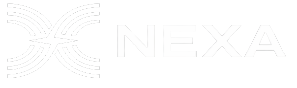
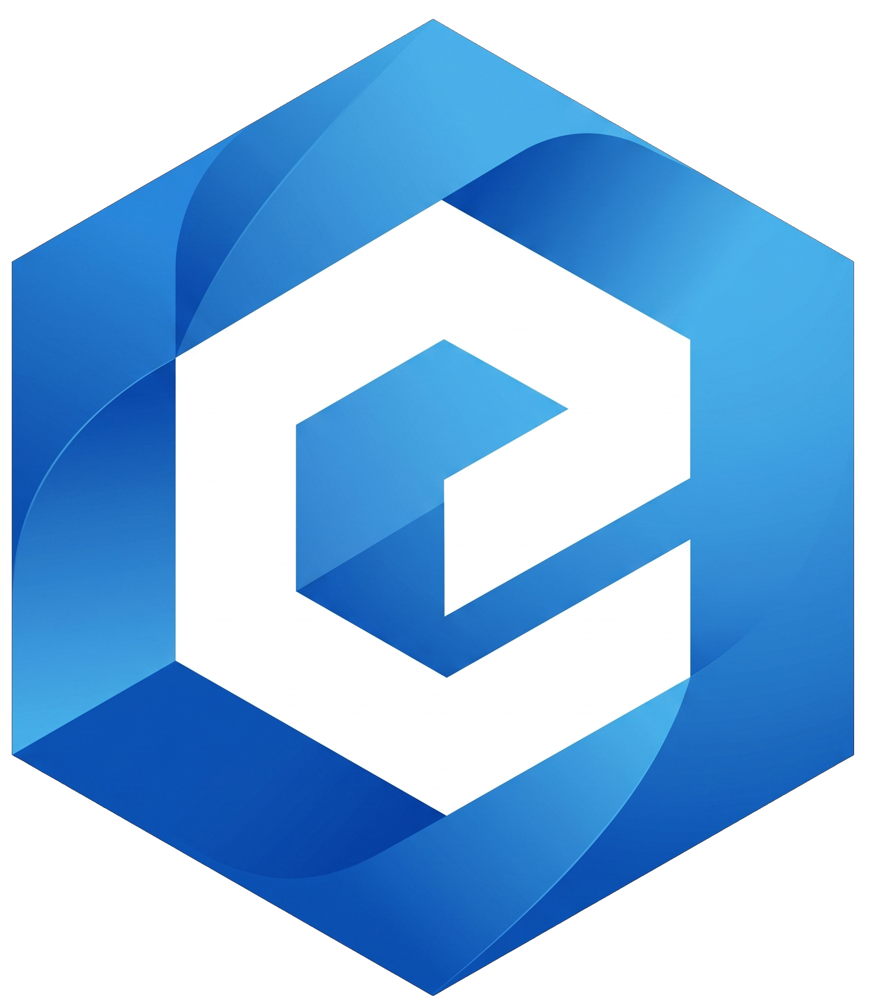

Rovers
Prototipos de rovers para la exploración espacial: vehículos que recorren terrenos extremos, navegan y recolectan datos donde las personas no llegan.
Tres días de trabajo intensivo para crear soluciones sobre los sectores donde la economía espacial argentina ya tiene impacto.
Del espacio como ciencia,
al espacio como mercado
2026
El hackathon convoca a desarrolladores, diseñadores, estudiantes y perfiles de negocio a resolver desafíos reales de los sectores productivos donde la economía espacial ya opera.
Argentina Space impulsa un ecosistema nacional con Salta como epicentro: tres días para transformar talento local en soluciones de escala global.
01
Dos desafíos alineados a los sectores del programa. Cada equipo elige un track y trabaja sobre problemas reales del sector durante las tres jornadas.
Prototipos de rovers para la exploración espacial: vehículos que recorren terrenos extremos, navegan y recolectan datos donde las personas no llegan.
Trazabilidad, identidad y activos digitales sobre redes descentralizadas: datos espaciales verificables y nuevos modelos de confianza.
02
Tres jornadas completas en el Centro de Convenciones de Salta. Los horarios detallados se publicarán antes del evento.
Miércoles 11 de noviembre
Recepción de participantes y entrega de credenciales.
Bienvenida oficial y presentación de los tracks.
Conformación de equipos y elección del desafío.
Primera sesión de desarrollo de los proyectos.
Rondas de consulta con mentores de cada track.
Balance de la jornada y pautas para el día siguiente.
Jueves 12 de noviembre
Segunda sesión de desarrollo de los proyectos.
Rondas de consulta con mentores de cada track.
Balance de la jornada y pautas para el último día.
Viernes 13 de noviembre
Cierre del desarrollo y entrega para evaluación.
Presentación de los proyectos ante el jurado.
Anuncio de los equipos ganadores.
Cierre oficial del evento.
03
04
Todo lo necesario para participar: documentos oficiales, documentación técnica y los canales de la comunidad.
El reglamento y el código de conducta ya están disponibles; las bases y condiciones se publican antes de la apertura de inscripciones.
Datasets, APIs y guías de trabajo se publicarán en este espacio antes del evento.
Recursos técnicos — Hackathon Argentina Space 2026
Datasets satelitales ............ se publican antes del evento
APIs y documentación ............ se publican antes del evento
Guía de entrega de proyectos .... se publica antes del evento
Consultas técnicas: marketing@argentinaspace.comLas novedades del evento se publican en los canales oficiales de Argentina Space y también llegan por correo.
Las dudas más comunes antes de inscribirse. Para cualquier otra consulta está disponible el correo del evento.
El hackathon convoca a desarrolladores, diseñadores, estudiantes y perfiles de negocio interesados en la economía espacial. Los requisitos de participación se detallan en las bases y condiciones, que se publican antes de la apertura de inscripciones.
No es necesario: la agenda del primer día incluye un espacio de formación de equipos para quienes llegan sin grupo. También se puede participar con un equipo ya conformado, según las condiciones que fijen las bases.
El costo de participación se confirma junto con la apertura de inscripciones y se publica en este sitio y en los canales oficiales de Argentina Space.
Computadora personal, cargador y todo lo que el equipo necesite para trabajar durante las tres jornadas. El detalle de materiales y servicios disponibles en el Centro de Convenciones se publica junto con el reglamento.
Cada equipo elige uno de los dos tracks del evento —Rovers y Blockchain— y desarrolla una solución sobre desafíos reales de ese sector. Los desafíos definitivos se presentan en la apertura.
La inscripción se realiza a través de Luma, en luma.com/ivdtiv4q.
Empresas e instituciones que hacen posible el hackathon.

Vapadu Alchemia LLC
Propulsar SaltaDev
Municipalidad de Salta Endeavor Argentina
Nexa
Economía del Conocimiento · SaltaHay espacios de patrocinio disponibles para acompañar el hackathon.
La inscripción se realiza a través de Luma. Reservá tu lugar para participar del hackathon.
Inscribite al hackathon